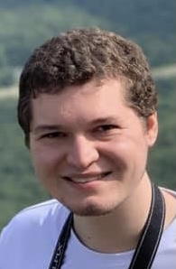
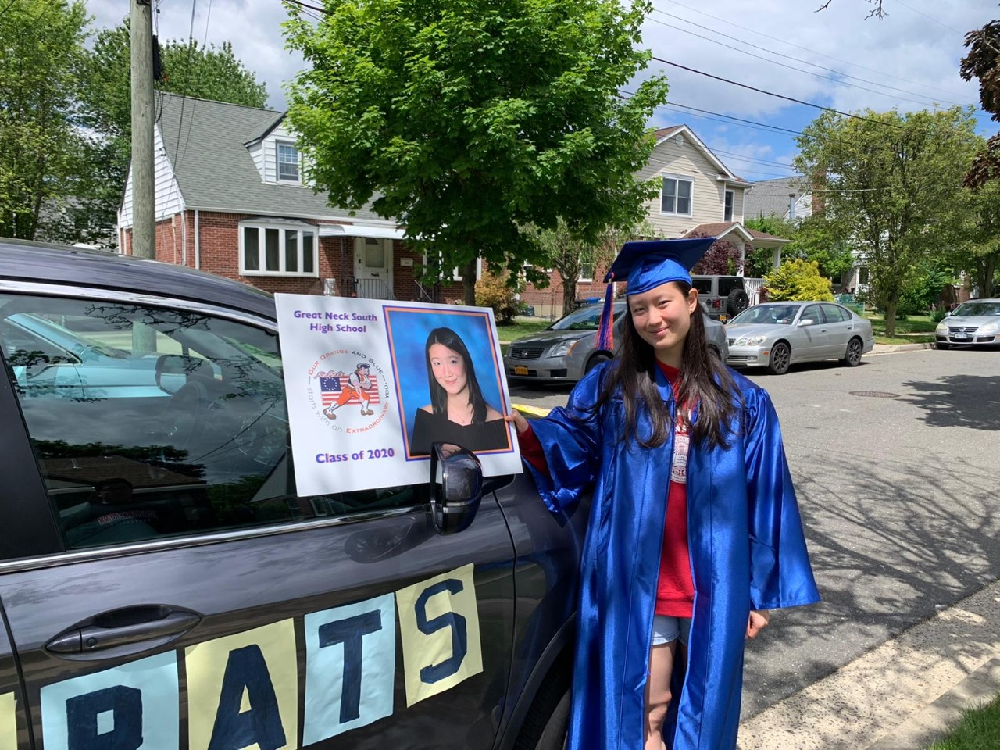

|
Current Members

Second Group Meeting, March 2021
Postdoctoral Scholars
Openings
PhD Students
Openings
Rotation Student
|
 |
Benjamin Kaufold
Hello, I'm Ben Kaufold, a 3rd-year Ph.D. student in the Chemistry department. My current work involves predicting the electronic properties of nickel-based semiconductors for catalytic applications. Besides chemistry, I am very fond of teaching, graphic design and touring Boston. My students are very fond of my SpongeBob-themed quizzes!
|
Master's Students
Undergraduate Students
|
 |
Janis Dong
Major in Biochemistry, Minor in Business
Eager to explore the mystery of chemistry and science to contribute more to the community.
Fun Fact: I swam competitively for 8 years.
|
|
|
Nithin Chintala
Major in Biochemistry, Minor in Computer Science
I love the intersection of computer science and biochemistry and specifically the ability to make models to predict protein / drug interactions.
Fun fact: I have a black belt in Taekwondo!
|
|
|
Ryan Boyd
Major in Physics, Minors in Philosophy and Mathematics
I am interested in all kinds of scientific research, especially astronomy, astrophysics, and computational physics.
Hobbies: I love to play sports, especially basketball, as well as read and play videogames in my free time.
|
Visiting Student
|
|
Sulaiman Al-Suhaibani
Chemical Engineering Student at the University of Texas at Austin
I aim to better understand enzymes for biofuel production.
I am a blue belt in Brazilian Jiu-Jitsu and I do rock climbing (bouldering).
|
|